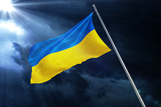

Україна
...І якщо впадеш ти на чужому полі, прийдуть з України верби і тополі, стануть пад тобою, листям затріпочуть, Тугою прощання душу залоскочуть...
Живи, Україно, живи для краси, для сили, для правди, для волі! Шуми, Україно, як рідні ліси, як вітер в широкому полі...
Україна: походження назви
Перші згадки
Назва «Україна» вперше з’являється в Київському літописі 1187 року, де йдеться про смерть переяславського князя Володимира Глібовича.
Основні версії походження
- «Погранична територія». За версією, поширеною в російській, радянській та українській історіографії, «Україна» означає прикордонну територію. Цю думку підтримували такі історики, як М. Грушевський, Богдан Барвінський, Володимир Охримович та інші.
- «Рідний край». Друга версія трактує слово «Україна» як «рідний край, земля». Прихильники: Б. Грінченко, Ф. Шевченко, В. Скляренко, В. Русанівський.
- «Межова земля». Степан Рудницький вважав, що «Україна» — це кордон між Європою та Азією. Його погляди підтримували Мирон Дольницький та Володимир Кубійович, але вони не набули широкого визнання.
Сучасний погляд
Науковці досі не дійшли єдиної думки щодо походження назви. Українські академічні джерела трактують її як «внутрішню країну» або «пограниччя».
Українська вишиванка
Вишиванка — це традиційний український костюм, оздоблений вишитими візерунками, що є важливим символом української культури, національної належності та духовності. Вона несе в собі тисячолітню історію, магію символів та кодів, а також зв'язок з предками і їх енергією.
Значення кольору української вишиванки
Кожен колір вишиванки має своє сакральне значення:
- Червоний — сонце, удача, захист, любов, пристрасть;
- Зелений — народження, ріст;
- Жовтий — сонячна енергія, життя, радість, багатство;
- Синій — жіноча енергія, спокій, вода, небо;
- Білий — чистота, святость, незайманість (для незаміжніх дівчат);
- Чорний — земля, родючість, але інколи біль і страждання.
Всі орнаменти розділяють на декілька видів:
- Геометричні орнаменти:
- лінії
- ромби
- трикутники
- хрести та інші фігури
- Рослинні орнаменти:
- квіти
- листя
- гілки
- дерева
- Тваринні орнаменти:
- зображення різних тварин:
- птахів
- риб
- або їх окремих елементів:
- очей
- рогів
- кігтів
- зображення різних тварин:
Значення символіки української вишиванки
- 1 - Дерево життя - краса, молодість, оновлення душі і тіла, безсмертя, відродження.
- 2 - Хрест - оберіг від злих духів. Прямий хрест - символ Творця, Сонця та чоловічого начала. Косий хрест - жіноче начало, символ Місяця
- 3 - Калина - любов, багатство, краса. Також це символ материнства (кущ - мати, ягоди - дітвора).
- 4 - Квіти маку - з давніх-давен вишивалися як оберіг-захисник від злого ока.
- 5 - Повна рожа (восьмипроменева зірка) - поєднання жіночого та чоловічого начал, що дає життя усьому. Цей символ часто називають Зіркою Богородиці і вишивають на іконах Діви Марії.
- 6 - Ромб - союз сонця і землі, символ плодючості.
- 7 - Шеврони - обернуті вершиною вниз - жіноча, матеріальна сутність, обернуті вершиною вгору - чоловіча, духовна сутність.
- 8 - Виноград та лоза - давній символ сімейного щастя.
- 9 - Сварга - символ сонячного культу, домашнього вогнища, родинного щастя.
Об’єкти світової спадщини ЮНЕСКО в Україні
Матеріал про пам'ятки України, що входять до списку Всесвітньої спадщини ЮНЕСКО. Ця міжнародна організація охороняє культурні та природні цінності, сприяє їх збереженню й розвитку. Статус Світової спадщини ЮНЕСКО гарантує захист, привертає увагу влади й громади, сприяє фінансуванню реконструкції та розвитку туризму. Україна багата на унікальні пам'ятки, що відповідають цим критеріям.